#blockbox:spiked_palisades
物品标签 · 20 个已收录成员
标签成员 (20)
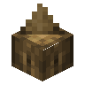
尖刺橡木实心栅栏blockbox:spiked_oak_palisade
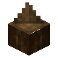
尖刺云杉木实心栅栏blockbox:spiked_spruce_palisade
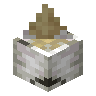
尖刺白桦木实心栅栏blockbox:spiked_birch_palisade
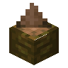
尖刺丛林木实心栅栏blockbox:spiked_jungle_palisade
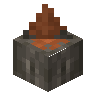
尖刺金合欢木实心栅栏blockbox:spiked_acacia_palisade
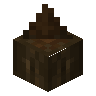
尖刺深色橡木实心栅栏blockbox:spiked_dark_oak_palisade
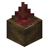
尖刺红树木实心栅栏blockbox:spiked_mangrove_palisade
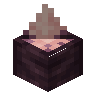
尖刺樱花木实心栅栏blockbox:spiked_cherry_palisade
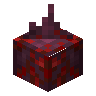
尖刺绯红木实心栅栏blockbox:spiked_crimson_palisade
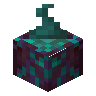
尖刺诡异木实心栅栏blockbox:spiked_warped_palisade
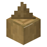
去皮尖刺橡木实心栅栏blockbox:stripped_spiked_oak_palisade
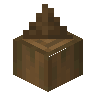
去皮尖刺云杉木实心栅栏blockbox:stripped_spiked_spruce_palisade
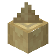
去皮尖刺白桦木实心栅栏blockbox:stripped_spiked_birch_palisade
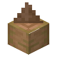
去皮尖刺丛林木实心栅栏blockbox:stripped_spiked_jungle_palisade
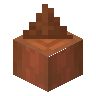
去皮尖刺金合欢木实心栅栏blockbox:stripped_spiked_acacia_palisade
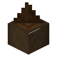
去皮尖刺深色橡木实心栅栏blockbox:stripped_spiked_dark_oak_palisade
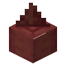
去皮尖刺红树木实心栅栏blockbox:stripped_spiked_mangrove_palisade
 去皮尖刺樱花木实心栅栏
去皮尖刺樱花木实心栅栏blockbox:stripped_spiked_cherry_palisade
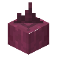
去皮尖刺绯红木实心栅栏blockbox:stripped_spiked_crimson_palisade
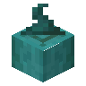
去皮尖刺诡异木实心栅栏blockbox:stripped_spiked_warped_palisade
使用该标签的配方
无